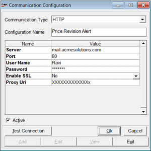

The Communication Configuration window is displayed.

Communication Type: Select the required mode of communication, from the list. The communication mode HTTP is selected by default. Other options available in the list are SMS, Online, E-Mail (SMTP), FTP, Direct Copy, Balloon Tip and Message Box.
Configuration Name: Give an appropriate name for the configuration set for the communication mode.
Configuration details grid
The Name and Value column of the parameters of the selected mode of communication are displayed in the grid. Each communication mode has a different set of parameters. Enter the required values for the parameters of the selected communication mode.
Note: While configuring the details of communication modes like Balloon Tip and Message Box, you have an option to categorise the alerts into Information, Warning or Error, as required.
Active: Select to make the communication type active.
Test Connection: Click to check the connectivity.